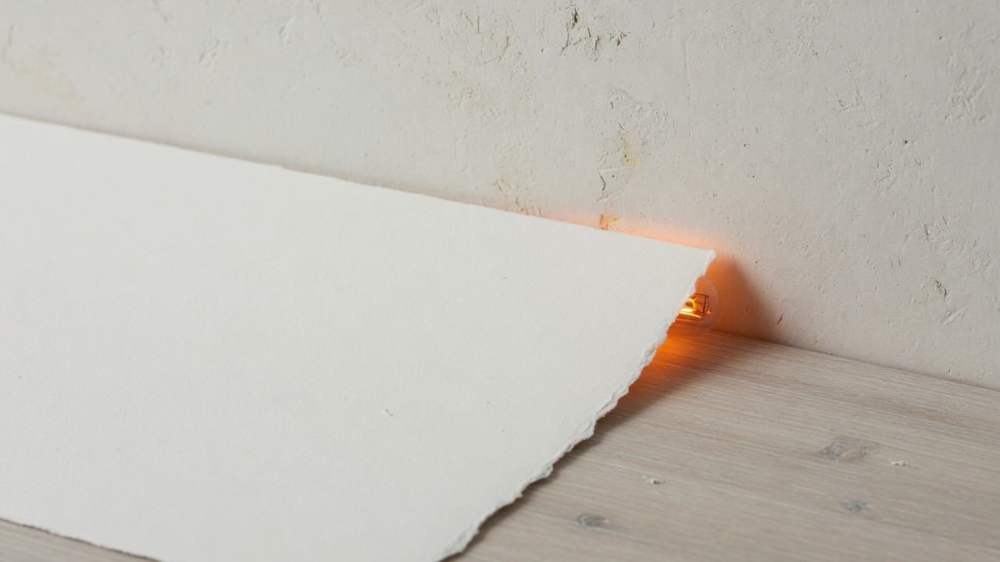
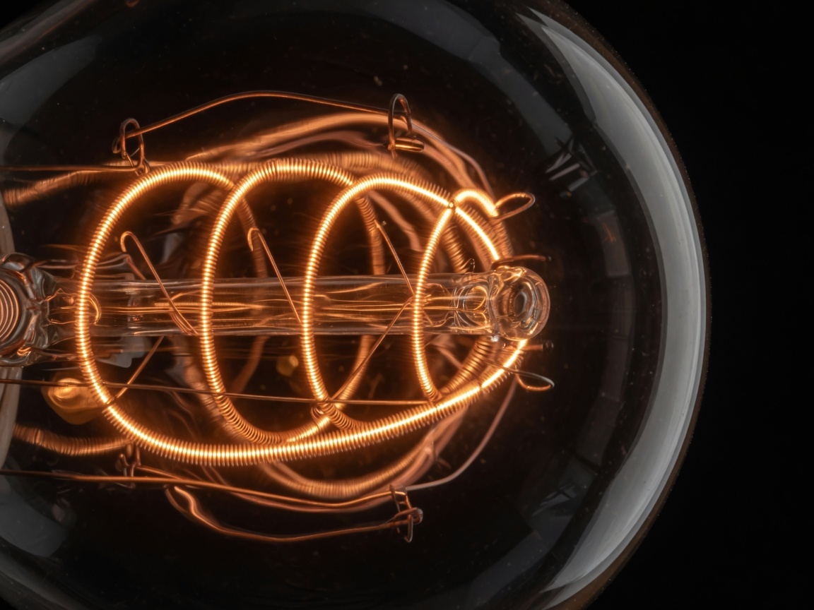

A / 01
Remote stays legible.
Connected, waiting, failed, and unverified are different states. The surface should never flatten them into one green dot.
Podex gives the tools around Codex a point of view: warm in the light, carbon at night, and precise about what is actually connected.


Podex is the design and product home for the companion layer around a custom Codex runtime.
Connected, waiting, failed, and unverified are different states. The surface should never flatten them into one green dot.
Each account gets its own profile and history. Switching is a deliberate handoff, not a silent credential shuffle.
A small orbital mark, a warm ember, a moment of ceremony—then get out of the way and let the work begin.